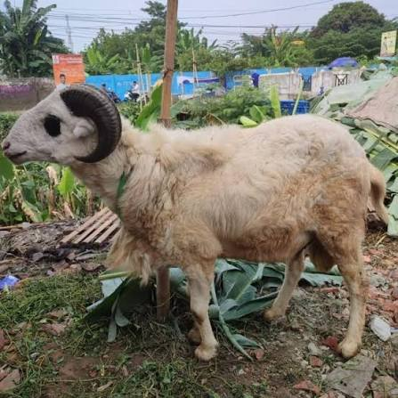

Melayani sejak 2018
Jual Domba Qurban & Aqiqah Sehat Berkualitas
Pilihan domba Garut, Texel, Dorper dan Ekor Gemuk dari Uwais Farm. Berkah, terpercaya, dan mudah dipesan langsung lewat WhatsApp.
Katalog
Pilihan Domba Qurban & Aqiqah
Pilih jenis dan bobot sesuai kebutuhan Anda, lalu pesan langsung lewat WhatsApp.





* Harga mulai dari dan dapat berubah sesuai bobot & kondisi hewan. Konfirmasi via WhatsApp.
Tentang Kami
Kenapa Memilih Uwais Farm?
Peternakan domba yang mengutamakan kualitas, kejujuran, dan keberkahan sejak 2018.
Hewan Sehat
Domba dirawat dengan pakan dan kandang terjaga agar sehat dan layak.
Sesuai Syariat
Pilihan hewan memenuhi kriteria untuk ibadah qurban dan aqiqah.
Harga Jujur
Harga terbuka dengan beragam pilihan bobot dan anggaran.
Terpercaya
Pelayanan ramah dan responsif melalui WhatsApp.
Pemesanan
Cara Pesan Mudah
1
Pilih Domba
Lihat katalog dan tentukan jenis serta bobot.
2
Chat WhatsApp
Klik tombol pesan, tanyakan stok dan harga terbaru.
3
Konfirmasi
Sepakati hewan, harga, dan waktu pengambilan/pengiriman.
4
Domba Diterima
Domba siap untuk qurban atau aqiqah Anda.
FAQ
Pertanyaan yang Sering Diajukan
Apakah Uwais Farm melayani pemesanan domba aqiqah dan qurban?
Ya. Uwais Farm menyediakan domba untuk aqiqah dan qurban. Hubungi kami via WhatsApp untuk memilih hewan sesuai kebutuhan dan anggaran Anda.
Bagaimana cara memesan domba?
Pilih domba di katalog, klik tombol Pesan Sekarang untuk chat WhatsApp, lalu konfirmasi jenis, bobot, dan waktu pengambilan atau pengiriman bersama tim kami.
Apakah harga di katalog sudah pasti?
Harga yang tertera adalah harga mulai dari. Harga akhir tergantung bobot dan kondisi hewan yang dipilih. Konfirmasi harga terbaru melalui WhatsApp.
Apakah bisa melihat langsung hewan sebelum membeli?
Silakan hubungi kami via WhatsApp untuk mengatur jadwal melihat hewan ternak secara langsung.
Siap Memesan Domba Qurban atau Aqiqah?
Konsultasi gratis dan cek stok terbaru langsung via WhatsApp.
Chat Sekarang